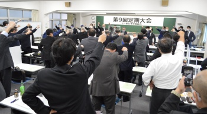

東日本ユニオン東京地本
JR東日本労働組合（略称・東日本ユニオン）東京地方本部です

コロナウイルス感染防止のために
可能な対策を実施しましょう。
トピックス
最新の情報をお知らせします。
2020年11月26日 交渉【TASKとホームドア】NEW
地本は申第14号「『TASC』およびホームドアに係る精度向上を実現する申し入れ」団体交渉を実施しました。
2020年11月25日 年末手当【妥結】NEW
本部は11月24日、2020年度年末手当について0.8カ月分の追加支給を求めて団体交渉に臨みました。職場の声を背景に経営側に迫りましたが、経営側の「2.2ヵ月は精一杯の回答」とゼロ回答を覆せず、翌25日に妥結をしました。

2020年11月21日 情報【業務の新聞】NEW
「業務の新聞」第65号を発行しました。
{kind=link}
2020年11月19日 大会【第9回本部大会】NEW

水道橋のinstabase内海において、JR東日本労働組合第9回定期大会が開催されました。新型コロナウイルス感染拡大防止の為に傍聴は取り組まず、代議員と役員のみの大会となりました。
議論も短時間で集中した議論が行われました。コロナ禍における労働運動の教訓点、年末手当のたたかい、その他業務課題などについて熱い討論が繰り広げられました。特に年末手当の追加支給要求について多くの代議員から「2.2ヵ月では足らない。満額支給までたたかおう」と決意が述べられました。
東京地本からは佐藤代議員が、コロナ禍における運動の教訓を中心に発言を行いました。詳細は後日お知らせします。
2020年11月16日 年末手当【追加支給申し入れ】
本部は、2020年度年末手当について0.8カ月分の追加支給を求めて、申し入れを行いました。
{kind=link}
2020年11月13日 年末手当【会社回答】
本部は、2020年度年末手当の第3回団体交渉に臨み、経営側から回答が示されました。本部は持ち帰り検討としました。
{kind=link}
2020年10月26日 年末手当【申し入れ】
本部は、経営側に2020年度年末手当を申し入れました。
{kind=link}
2020年10月23日 レク【ゴルフ大会】NEW

地本は、宇都宮レイクランドカントリークラブにおいて、感染予防に配慮しつつ東京地本ゴルフ大会を開催しました。
天候には、恵まれませんでしたが、ボールをスカッとかっ飛ばし、仲間たちと緑に囲まれ楽しく一日を過ごすことができました。
集まること＝ダメではありません。十分な構えと備えを行い、仲間たちと有意義な時間を共有したい思います。参加された皆さん、お疲れさまでした。
お知らせ
第9回東京地本定期大会
{kind=link}

- 日 時
- 2020年12月12日（土）13時から
- 場 所
- 南部労政会館
- 参加者
- 各分会代表・エルダー協議会代表、各1名
- 議 題
-
- 活動報告
- 2020年度運動方針（案）
- 2019年度決算及び会計監査報告
- 2020年度予算（案）
- その他
- その他
-
- コロナウイルス感染防止のため参加者を限定し、傍聴は取り組みません。
- 参加者以外の代議員（組合員）の皆さんには、委任状の提出をお願いします。
- 大会の内容については、後日情報等でお知らせします。